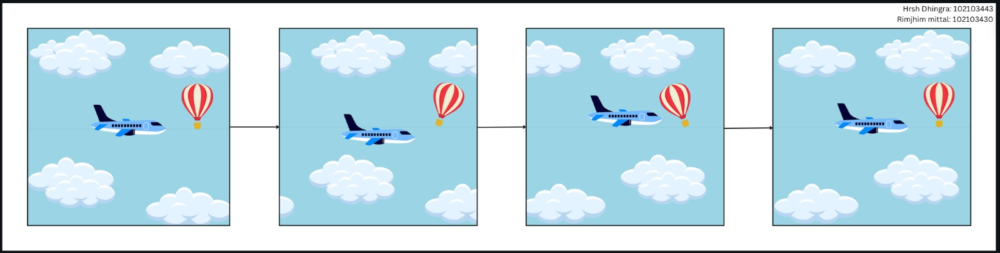

Welcome to our documentation!
[Click here to see live demo]Overview:
The objective of this project is to utilize JavaScript on a pre-defined canvas, along with CSS and HTML5, to design an animation featuring a plane flying across the sky, passing through clouds with a hot air balloon hovering in the background, simulating a parallax effect. This parallax effect creates a sense of depth and movement throughout the canvas.
Through this project, we were able to grasp the following concepts:
- Deep dive into web development: Understanding how multiple languages like HTML, JS, and CSS come together on the execution and hosting of a single `index.html` file to make a reactive webpage.
- Canvas drawing: Understanding how to use the HTML5 canvas element and draw basic shapes.
- Animations and Transformations: Creating smooth animations using `requestAnimationFrame`, updating canvas elements dynamically, and using element-specific update functions.
- Responsive designing: Following responsive designing principles allows us to deliver a prototype that can be deployed universally and can run on devices irrespective of their aspect ratios (including mobile devices, tablets, and desktops). This was possible using the `this` keyword to refer to the current instances of the canvas through `this.width` and `this.height`. The context rendering on the canvas was handled using `this.ctx` for class instances.
Storyboard:
Project GIF:
Animation Drawing Assets
All drawing assets have been drawn and exported as PNGs from Canva and ported to JavaScript as combinations of Bezier curves using the Inkscape software: Inkscape.
- Aeroplane: The aeroplane is an oscillating element created using functions like `beginPath()`, `moveTo()`, `lineTo()`, `bezierCurveTo()`, and `closePath()`, in sequence with `fill()` to fill the closed figures with color.
- Clouds: The clouds are a group of five individual clouds, grouped together in a static element that translates across the canvas in a loop to simulate a moving backdrop.
- Hot Air Balloon:The hot air balloon is a static element designed to enhance the parallax effect of the moving background. It is also drawn using Bezier curves, and `fill()` is used to add multiple colors to the element.